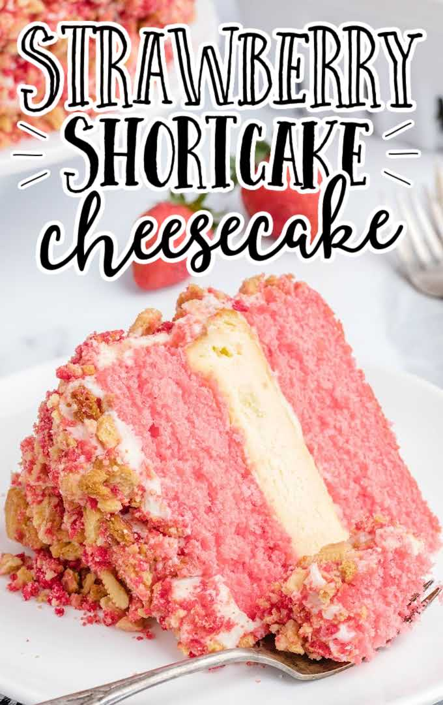

Strawberry Shortcake Cheesecake

Recipe Description
This stunning strawberry shortcake cheesecake layers strawberry-flavored cake with a rich, creamy cheesecake filling. A topping made with crushed cookies is sprinkled over the cream cheese frosting for a truly impressive recipe.
This delicious cake is made using two moist layers of strawberry cake with a creamy, cheesecake center. The crunch comes from the topping that is created from pieces of vanilla sandwich cookies flavored with strawberry gelatin.
Ingredients
- Butter
- Sugar
- Strawberry Cake Mix
- Red Food Colouring
- Strawberry Gelatin
- Milk
- Eggs
- Vanilla Cookies
- Powdered Sugar
- Cream
- Vanilla
- Cream Cheese
- Cornstarch
Steps
- Preheat the oven to 350°F. Line a standard baking sheet with parchment paper and set it aside.
- Evenly divide the coarsely crushed cookies into 2 small mixing bowls.
- Pour 1 of the 3 ounce boxes of dry strawberry gelatin mix over 1 of the bowls of cookie crumbs and stir to combine.
- Pour 2 tablespoons of the melted unsalted butter over the plain cookie crumb bowl and mix well
.
- Drop 5 to 6 drops of the red food coloring gel into the remaining 2 tablespoons of butter and stir to mix the coloring. Pour the tinted melted butter over the gelatin crumb mixture. Stir very well to ensure the color is evenly distributed.
- Evenly sprinkle the vanilla and strawberry bowls of buttered cookie crumbs onto the prepared baking sheet. Bake for 10 minutes. Allow the crumbs to completely cool, while you prepare the cakes.
- Preheat the oven to 350 degrees. Generously spray two 9 inch round cake pans with bakers spray (Baker's Joy). Set them aside.
- Using a stand mixer or an electric handheld mixer and a medium-size mixing bowl add the cake mix, eggs, melted unsalted butter, milk, and strawberry gelatin mix. Mix all ingredients together on medium speed until well incorporated and smooth.
- Evenly divide the cake batter between the 2 prepared round cake pans. Bake for 24 to 28 minutes, or until a toothpick inserted comes out clean. Be sure to leave the oven on to bake the cheesecake.
- Allow the cake to completely cool on a cooling rack. Once cooled, remove the cakes from the pans, and set them aside.
- Reduce the oven temperature to 325 degrees.
- In a small mixing bowl, whisk together the granulated sugar and the cornstarch. Set this aside.
- Line the bottom of a 9 inch springform pan with parchment paper, and generously spray the springform pan with nonstick spray. Set it aside.
- Using a stand mixer or an electric handheld mixer on medium-high speed to cream together the cream cheese, heavy cream, and vanilla extract.
- Reduce the mixer speed to low, add the eggs one at a time, until all eggs are well incorporated.
- Leaving the mixer on low, slowly add the granulated sugar and the cornstarch. Increase the speed to medium and mix until the batter is smooth.
- Pour the cheesecake batter into the springform pan.
- Bake at 325 degrees for 40 minutes. Leaving the oven door closed, turn the oven off and leave the cheesecake in the oven for 20 additional minutes.
- Remove the cheesecake and allow it to cool on a cooling rack for 30 minutes.
- Tightly cover the cheesecake, and place in the freezer for 1 hour.
- Using either a stand mixer or a handheld mixer and a medium-size mixing bowl, on medium-high speed cream together the cream cheese, heavy cream, and unsalted butter for 1 ½ to 2 minutes. Be sure to scrape down the sides of the bowl with a silicone spatula.
Lower the mixer to low and slowly add the vanilla.
- Keeping the mixer speed low, slowly add the powdered sugar 1 cup at a time. Increase the speed to medium and mix until smooth.
- Using your choice of serving plate, center 1 of the strawberry cake layers.
- Scoop out ¼ cup of frosting and place in the center of the bottom cake layer. Using either an offset spatula, or a silicone spatula, evenly smooth out the frosting. Don’t worry if there are crumbs in the frosting.
- Remove the cheesecake from the freezer. Carefully run a sharp, flexible knife along the inside edge of the cheesecake. Slowly release the springform sides. Line a flat plate with wax paper, and place it on top of the cheesecake. Securely turn the cheesecake upside down to remove the base of the springform pan and the parchment paper.
- Carefully turn the cheesecake right side up and place it on top of the bottom layer of strawberry cake.
- Scoop out another ¼ cup of frosting to smooth over the cheesecake layer.
- Place the top strawberry cake layer on top of the cheesecake layer.
- Evenly spread the remaining frosting over the rest of the cake. Again, do not worry if there are crumbs, the cookie crumb coating will hide the crumbs in the frosting.
- Break the cooled cookie crumbs up into small pieces.
- Sprinkle the top of the cake with cookie crumbs. Using your hands, gently press/pat the cookie crumbs on the sides of the cake.